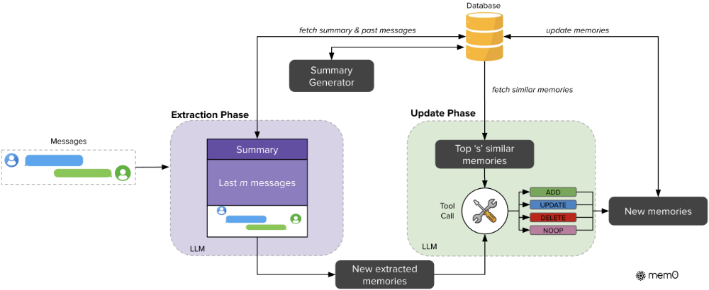
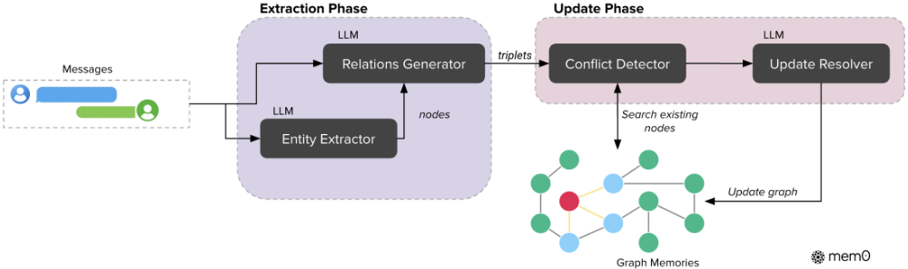
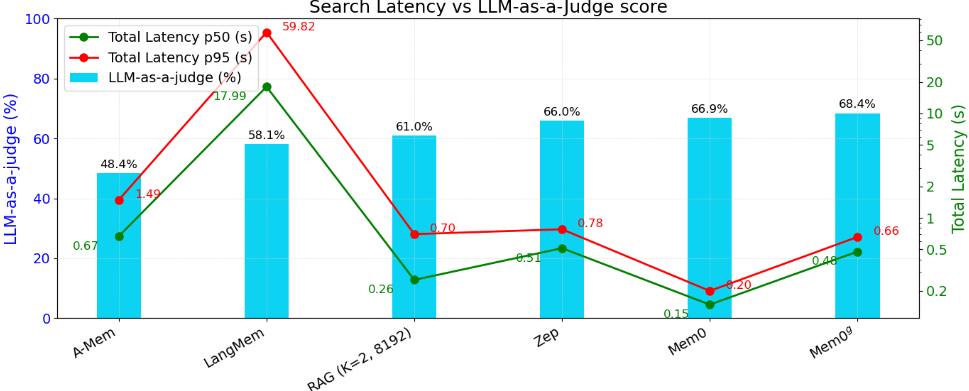
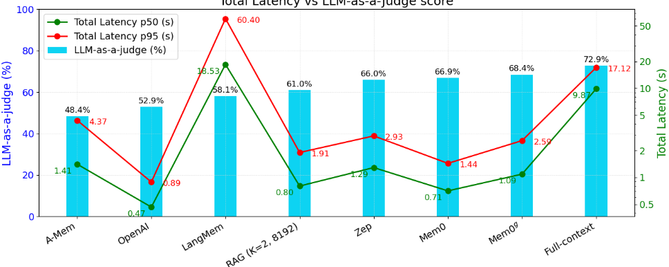

Mem0: Building Production-Ready AI Agents with Scalable Long-Term Memory
Mem0：构建具备可扩展长期记忆的生产级 AI Agent
简介
LLM 的固定上下文窗口使 Agent 难以在跨会话长对话中保持一致性，而全上下文方案又随对话增长带来高昂 token 成本与延迟。论文提出 Mem0：一个以记忆为中心的生产级架构，采用“提取-更新”两阶段流水线，由 LLM 从对话增量中抽取候选记忆，再通过 tool call 让 LLM 决策 ADD/UPDATE/DELETE/NOOP 四种操作维护记忆库一致性；增强版 Mem0g 进一步以有向标签图（Neo4j）建模实体与关系，支持冲突检测与实体/三元组双路检索。在 LOCOMO 基准上，Mem0 在 LLM-as-a-Judge 指标上相对 OpenAI 记忆功能提升 26%，p95 延迟较全上下文方案降低 91%、token 成本节省 90% 以上；Mem0g 在时序类问题上表现最佳。这是 Agent 记忆系统与上下文管理方向的代表性工程论文，其“质量+部署”双维评测方法同样值得团队借鉴。
问题
LLM 依赖固定上下文窗口，缺乏跨会话的持久记忆机制，导致 Agent 在长周期交互中遗忘用户偏好、重复提问、与既有事实矛盾；即便加长上下文也只是延迟而非解决该问题，且全上下文处理随对话增长带来显著的 token 成本与延迟开销。论文旨在为 AI Agent 构建可扩展、可生产部署的长期记忆系统，在保持回答质量的同时大幅降低计算开销。
方法
提出两种架构：(1) Mem0 采用增量式两阶段流水线——提取阶段以异步刷新的对话摘要 S、最近 m 条消息与新消息对组成提示，由 LLM 抽取候选记忆；更新阶段用向量嵌入检索 top-s 条语义相似记忆，通过 function calling（tool call）让 LLM 直接判定 ADD/UPDATE/DELETE/NOOP 四种操作，而非使用独立分类器。(2) Mem0g 将记忆表示为有向标签图（实体为节点、关系三元组为边，存于 Neo4j），用两阶段 LLM 流水线做实体抽取与关系生成，新信息整合时进行冲突检测并将过时关系标记失效而非物理删除以支持时序推理；检索采用实体中心子图扩展与语义三元组匹配的双路策略。推理引擎为 GPT-4o-mini，实验配置 m=10、s=10。
关键结果
在 LOCOMO 上，Mem0 相对 OpenAI 记忆功能在 LLM-as-a-Judge 指标上取得 26% 相对提升；Mem0g 总分比基础版 Mem0 高约 2%
Mem0 相比全上下文方案 p95 延迟降低 91%、token 成本节省超过 90%；4.3 节给出具体数值：Mem0 总 p95 延迟约 1.44 秒（降幅 92%），Mem0g 约 2.6 秒（降幅 85%），全上下文约 17 秒
分题型结果：单跳 Mem0 F1=38.72、J=67.13；多跳 Mem0 F1=28.64、J=51.15；时序 Mem0g F1=51.55、J=58.13；开放域 Zep 以 J=76.60 略优于 Mem0g 的 75.71 与 Mem0 的 72.93
对比 RAG：最强 RAG 配置 J 约 61%，Mem0 达 67%（约 10% 相对提升），Mem0g 超 68%（约 12% 相对提升）；全上下文 J 约 73% 最高但延迟与成本极高
记忆库 token 开销：Mem0 平均每对话约 7k tokens，Mem0g 约 14k，Zep 超过 600k，原始全上下文约 26k；Mem0 图构建在最坏情况下不到一分钟，而 Zep 存在数小时的记忆可用性延迟
延迟分析：Mem0 搜索延迟最低（p50 0.148s、p95 0.200s），总延迟 p50 0.708s、p95 1.440s；Mem0g 总 J 68.44%，为除全上下文外最高
结论部分总结：在单跳、时序、多跳题型上分别取得 5%、11%、7% 的相对提升
创新点
相对 MemGPT、MemoryBank、A-Mem、Zep 等已有记忆系统，Mem0 的区别在于：不依赖独立分类器，而是让 LLM 通过 tool call 基于候选事实与既有记忆的语义关系直接选择管理操作；以增量消息对为处理单位并辅以异步刷新的对话摘要提供全局上下文；Mem0g 显式建模实体关系图，冲突时将过时关系标记失效而非物理删除以保留时序推理能力。此外论文强调生产部署维度（p50/p95 延迟、token 消耗、记忆构建时间），并在 LOCOMO 上系统对比六类基线（含多种 chunk/k 配置的 RAG 与全上下文方案）。
团队参考意义
相关度级别：high
命中能力域：3.1 上下文工程与记忆 | 3.3 Agent 架构与工具使用 | 3.5 评测与可靠使用
理由：直接命中 3.1（Agent 记忆系统、上下文窗口管理与压缩、与 RAG/全上下文方案的系统对比、记忆在生产系统中的管理）：论文核心就是跨会话长期记忆的动态抽取、整合与检索，是上下文工程方向的代表性工作。同时命中 3.3：记忆更新通过 function calling/tool call 实现，由 LLM 自主决策四种操作，属于 Agent 工具调用与执行可靠性的典型设计。还命中 3.5：论文提供了 LLM-as-a-Judge 质量指标叠加 token 消耗、p50/p95 延迟、记忆构建时间等部署指标的多维评测框架，并给出成本-质量权衡的实证结论，对团队建设 Agent 评测体系与生产落地决策有直接参考价值。
建议动作：深入精读并做内部分享
中文全文
arXiv:2504.19413v1 [cs.CL] 28 Apr 2025
Mem0 : Building Production-Ready AI Agents with Scalable Long-Term Memory
Prateek Chhikara、Dev Khant、Saket Aryan、Taranjeet Singh 和 Deshraj Yadav
research@mem0.ai
mem0
大型语言模型（LLMs）在生成上下文连贯的回复方面已展现出卓越的能力，然而其固定的上下文窗口为在长期的多会话对话中保持一致性带来了根本性挑战。我们提出了 Mem0，这是一种可扩展的、以记忆为中心的架构，通过从正在进行的对话中动态提取、整合和检索关键信息来解决这一问题。在此基础上，我们进一步提出了一种增强变体，该变体利用基于图的记忆表示来捕捉对话元素之间复杂的关系结构。通过在 LOCOMO 基准测试（benchmark）上的全面评估，我们系统地将我们的方法与六类基线进行了比较：(i) 成熟的记忆增强系统，(ii) 采用不同分块大小和 k 值的检索增强生成（RAG），(iii) 处理完整对话历史的全上下文方法，(iv) 开源记忆解决方案，(v) 专有模型系统，以及 (vi) 专门的记忆管理平台。实验结果表明，我们的方法在单跳、时序、多跳和开放域四类问题上始终优于所有现有的记忆系统。值得注意的是，Mem0 在 LLM-as-a-Judge 指标上相比 OpenAI 取得了 26% 的相对提升，而带图记忆的 Mem0 的整体得分比基础 Mem0 配置高出约 2%。除了准确率的提升之外，与全上下文方法相比，我们还显著降低了计算开销。特别是，Mem0 的 p95 延迟降低了 91%，并节省了超过 90% 的 token 成本，从而在先进推理能力与实际部署约束之间提供了极具吸引力的平衡。我们的研究结果凸显了结构化、持久化记忆机制对于实现长期对话连贯性的关键作用，为构建更可靠、更高效的 LLM 驱动的 AI Agent 铺平了道路。
代码可在以下位置获取
1. Introduction
人类记忆是智能的基石——它塑造我们的身份认同，引导决策制定，并使我们能够学习、适应并建立有意义的人际关系 (Craik and Jennings, 1992)。在记忆的诸多作用中，它对交流至关重要：我们回忆过去的互动，推断对方的偏好，并为与我们交往的人构建不断演化的心理模型 (Assmann, 2011)。这种在长时间跨度内保留并检索信息的能力，使得跨越数天、数周乃至数月的连贯且语境丰富的交流成为可能。由大语言模型（LLM）驱动的 AI Agent 在生成流畅且符合语境的回复方面已取得显著进展 (Yu et al., 2024, Zhang et al., 2024)。然而，这些系统从根本上受限于对固定上下文窗口的依赖，这严重制约了它们在长时间交互中保持连贯性的能力 (Bulatov et al., 2022, Liu et al., 2023)。这一局限源于 LLM 缺乏能够延伸到其有限上下文窗口之外的持久化记忆机制。虽然人类会自然而然地随时间积累并组织经验，形成连续的

交互叙事，AI 系统却无法在本质上将信息持久保存于相互独立的会话之间或上下文溢出之后。持久化记忆的缺失在人类与 AI 的交互中造成了根本性的脱节。没有记忆，AI Agent 会遗忘用户偏好、重复提问，并与先前确立的事实相矛盾。考虑图 1 所示的一个简单示例：用户在初次对话中提到自己是素食者并避免乳制品。在后续会话中，当用户询问晚餐推荐时，缺乏持久化记忆的系统可能会推荐鸡肉，完全违背了已确立的饮食偏好。相比之下，具备持久化记忆的系统会在会话之间保留这一关键用户信息，并推荐合适的素食、无乳制品选项。这一常见场景凸显了记忆失效会如何从根本上损害用户体验与信任。
在对话场景之外，记忆机制已被证明能够显著提升 Agent 在交互环境中的表现 (Majumder et al., Shinn et al., 2023)。具备过往经验记忆的 Agent 能够更好地预判用户需求、从先前的错误中学习，并跨任务泛化知识 (Chhikara et al., 2023)。研究表明，记忆增强的 Agent 通过利用动作与结果之间的因果关系来改进决策，从而在动态场景中实现更有效的适应 (Rasmussen et al., 2025)。分层记忆架构 (Packer et al., 2023, Sarthi et al., 2024) 以及能够自主演化的智能体记忆系统 (Xu et al., 2025) 进一步表明，记忆能够在多个对话会话之间实现更连贯的长期推理。
与人类会动态整合新信息并修正过时信念不同，大语言模型（LLM）一旦信息超出其上下文窗口，实际上就会“重置”（Zhang, 2024, Timoneda and Vera, 2025）。尽管 OpenAI 的 GPT-4（128K token）（Hurst et al., 2024）、o1（200K 上下文）（Jaech et al., 2024）、Anthropic 的 Claude 3.7 Sonnet（200K token）（Anthropic, 2025）以及 Google 的 Gemini（至少 10M token）（Team et al., 2024）等模型不断突破上下文长度的边界，但这些改进只是延缓而非解决了这一根本性局限。在实际应用中，即便是这些扩展后的上下文窗口也被证明是不够的，原因有二。首先，随着有意义的人机关系在数周或数月内逐步发展，对话历史不可避免地会超出即便是最宽松的上下文限制。其次，或许更为重要的是，现实世界的对话很少保持主题上的连续性。用户可能先提到自己的饮食偏好（素食），随后进行数小时与编程任务无关的讨论，最后才回到关于晚餐选择的饮食相关查询。在这种场景下，全上下文方法需要在海量无关信息中进行推理，关键的饮食偏好可能被埋没在数千 token 的编程讨论之中。此外，仅仅提供更长的上下文并不能确保对过去信息的有效检索或利用，因为注意力机制在处理远距离 token 时会退化（Guo et al., 2024, Nelson et al., 2024）。这一局限在医疗、教育和企业支持等高风险领域尤为成问题，因为在这些领域中，保持连续性和信任至关重要（Hatalis et al., 2023）。为应对这些挑战，AI Agent 必须采用超越静态上下文扩展的记忆系统。一个健壮的 AI 记忆系统应当有选择地存储重要信息、整合相关概念，并在需要时检索相关细节——模拟人类认知过程（He et al., 2024）。通过整合此类机制，我们可以开发出能够保持一致人格、跟踪不断演变的用户偏好并基于先前交流持续构建的 AI Agent。这一转变将使 AI 从短暂、健忘的应答者转变为可靠、长期的协作者，从根本上重新定义对话智能的未来。

在本文中，我们着手解决 AI 系统的一个根本性局限：它们无法在不同会话的长时间对话中保持连贯的推理，这严重限制了与用户进行有意义的长期交互。我们提出 Mem0（发音为 mem-zero），这是一种新颖的记忆架构，能够从正在进行的对话中动态地捕获、组织和检索显著信息。在此基础之上，我们进一步开发了 Mem0 g，它通过基于图的记忆表示增强了基础架构，以更好地建模对话元素之间的复杂关系。我们在 LOCOMO 基准测试上的实验结果表明，我们的方法在多种问题类型上始终优于现有记忆系统——包括记忆增强架构、检索增强生成（RAG）方法以及开源与专有解决方案——同时所需的计算资源也显著更低。延迟测量进一步表明，Mem0 的响应时间比全上下文方法低 91%，在复杂推理能力与实际部署约束之间取得了最佳平衡。这些贡献朝着能够在长时间内保持连贯、上下文感知对话的 AI 系统迈出了有意义的一步——呼应了人类的交流模式，并为个人辅导、医疗保健和个性化助理等应用开辟了新的可能性。
2. Proposed Methods
我们为 AI Agent 引入了两种记忆架构。(1) Mem0 实现了一种新颖的范式，通过专用的记忆提取与更新模块，从对话中提取、评估并管理显著信息。该系统处理一对消息，这对消息既可以来自两个用户参与者之间，也可以来自用户与助手之间。(2) Mem0 g 在此基础上进行了扩展，引入了基于图的记忆表示，将记忆存储为有向标记图，其中实体作为节点，关系作为边。这种结构能够更深入地理解实体之间的联系。通过显式地对实体及其关系进行建模，Mem0 g 支持在相互关联的事实之间进行更高级的推理，尤其适用于需要在多条记忆之间遍历复杂关系路径的查询。
2.1. Mem0
我们的架构遵循增量处理范式，使其能够在持续进行的对话中无缝运行。如图 2 所示，完整的流水线架构由两个阶段组成：提取（extraction）和更新（update）。
提取阶段在摄入新的消息对 (mt-1, mt) 时启动，其中 mt 表示当前消息，mt-1 表示前一条消息。这一消息对通常由一条用户消息和一条助手回复组成，构成一个完整的交互单元。为了给记忆提取建立适当的上下文，系统采用了两个互补的信息来源：(1) 从数据库中检索得到的对话摘要 S，它概括了整个对话历史的语义内容；(2) 来自对话历史的近期消息序列 {mt-m, mt-m+1, ..., mt-2}，其中 m 是用于控制近期窗口（recency window）的超参数。为支持上下文感知的记忆提取，我们实现了一个异步摘要生成模块，该模块会定期刷新对话摘要。该组件独立于主处理流水线运行，确保记忆提取始终能够受益于最新的上下文信息，同时不会引入处理延迟。S 为整个对话提供全局性的主题理解，而近期消息序列则提供细粒度的时序上下文，其中可能包含尚未整合进摘要的相关细节。这种双重上下文信息与新消息对相结合，构成了一个完整的提示 P = (S, {mt-m, ..., mt-2}, mt-1, mt)，供通过大语言模型（LLM）实现的提取函数 ϕ 使用。随后，函数 ϕ(P) 在保持对对话更广泛上下文感知的同时，专门从新的交互内容中提取出一组显著记忆 Ω = {ω1, ω2, ..., ωn}，从而得到可能被纳入知识库的候选事实。
3


在提取之后，更新阶段会将每个候选事实与现有记忆进行比对评估，以保持一致性并避免冗余。该阶段为每个提取出的事实 ω i ∈ Ω 确定合适的记忆管理操作。附录 B 中提到的算法 1 展示了这一过程。对于每个事实，系统首先利用向量嵌入（vector embeddings）从数据库中检索语义相似度最高的前 s 条记忆。随后，这些检索到的记忆连同候选事实一起，通过我们称为“工具调用”（tool call）的函数调用接口呈现给大语言模型（LLM）。LLM 自行决定执行四种不同操作中的哪一种：ADD，用于在不存在语义等价记忆时创建新记忆；UPDATE，用于利用补充信息增强现有记忆；DELETE，用于删除与新信息相矛盾的记忆；以及 NOOP，用于候选事实无需对知识库进行任何修改的情况。我们没有使用单独的分类器，而是利用 LLM 的推理能力，根据候选事实与现有记忆之间的语义关系直接选择合适的操作。在做出该判定后，系统执行所提供的操作，从而保持知识库的连贯性与时间一致性。
4


在实验评估中，我们将系统配置为使用 ' m ' =10 条先前消息作为上下文参考，并使用 ' s ' =10 条相似记忆进行比较分析。所有语言模型操作均采用 GPT-4o-mini 作为推理引擎。向量数据库采用稠密嵌入（dense embeddings），以便在更新阶段实现高效的相似性搜索。
2.2. Mem0 g
Mem0 g 流水线如图 3 所示，实现了一种基于图的记忆方法，能够有效地从自然语言交互中捕获、存储和检索上下文信息（Zhang et al., 2022）。在该框架中，记忆被表示为一个有向带标签图 G = ( V , E , L )，其中：
每个实体节点 v ∈ V 包含三个组成部分：(1) 用于对实体进行分类的实体类型标签（例如 Person、Location、Event），(2) 捕捉实体语义含义的嵌入向量 ev，以及 (3) 包含创建时间戳 t v 的元数据。在我们的系统中，关系以三元组 ( vs , r , vd ) 的形式进行结构化，其中 vs 和 vd 分别为源实体节点和目标实体节点，r 是连接它们的带标签边。
提取过程采用两阶段流水线，利用大语言模型（LLM）将非结构化文本转换为结构化的图表示。首先，实体提取器模块对输入文本进行处理，识别出一组实体及其对应的类型。在我们的框架中，实体表示对话中的关键信息元素——包括值得在记忆图中进行表示的人员、地点、物体、概念、事件和属性。实体提取器通过分析对话中各元素的语义重要性、独特性和持久性来识别这些多样化的信息单元。例如，在关于旅行计划的对话中，实体可能包括目的地（城市、国家）、交通方式、日期、活动以及参与者的偏好——本质上是任何可能与未来参考或推理相关的离散信息。

接下来，关系生成器组件在这些实体之间推导出有意义的连接，建立一组能够捕捉信息语义结构的关系三元组。这一基于大语言模型（LLM）的模块会分析提取出的实体及其在对话中的上下文，以识别语义上重要的连接。它通过考察语言模式、上下文线索和领域知识来确定实体之间如何相互关联。对于每个潜在的实体对，生成器会评估是否存在有意义的关系，如果存在，则用适当的标签对该关系进行分类（例如 'lives_in'、'prefers'、'owns'、'happened_on'）。该模块采用提示工程技术，引导 LLM 对对话中的显式陈述和隐含信息进行推理，由此产生的关系三元组构成了我们记忆图中的边，并支持跨互联信息的复杂推理。在整合新信息时，Mem0 g 采用一种精细的存储与更新策略。对于每个新的关系三元组，我们为源实体和目标实体分别计算嵌入，然后搜索语义相似度高于定义阈值 ' t ' 的现有节点。根据节点的存在情况，系统可能同时创建两个节点、仅创建一个节点，或使用现有节点，然后再建立带有相应元数据的关系。为了维护一致的知识图谱，我们实现了一种冲突检测机制，在新信息到达时识别可能存在冲突的现有关系。基于 LLM 的更新解析器会判断某些关系是否应当废弃，将其标记为无效而非从物理上删除，从而支持时间推理。
Mem0 g 中的记忆检索功能实现了一种双路径策略，以实现最优的信息访问。以实体为中心的方法首先识别查询中的关键实体，然后利用语义相似度在知识图谱中定位对应的节点。它系统地探索这些锚点节点的入向关系和出向关系，构建一个能够捕捉相关上下文信息的综合子图。与此互补，语义三元组方法采取更整体化的视角，将整个查询编码为一个稠密嵌入向量。随后，将该查询表示与知识图谱中每个关系三元组的文本编码进行匹配。系统计算查询与所有可用三元组之间的细粒度相似度得分，仅返回超过可配置相关性阈值的三元组，并按相似度递减的顺序排序。这种双重检索机制使 Mem0 g 能够同样有效地处理聚焦特定实体的针对性问题和更广泛的概念性查询。
从实现角度来看，系统采用 Neo4j 1 作为底层图数据库。基于大语言模型（LLM）的抽取器与更新模块利用具备函数调用能力的 GPT-4o-mini，从而能够从非结构化文本中实现结构化的信息抽取。通过将基于图的表示与语义嵌入以及基于 LLM 的信息抽取相结合，Mem0 g 同时具备了复杂推理所需的结构丰富性，以及自然语言理解所需的语义灵活性。
3.1. Dataset
LOCOMO（Maharana et al., 2024）数据集旨在评估对话系统中的长期对话记忆能力。该数据集由 10 段扩展对话组成，每段对话平均包含约 600 条对话和 26000 个 token，分布在多个会话中。每段对话记录了两个人讨论日常经历或过往事件的过程。在这些多会话对话之后，每段对话平均附带 200 个问题及对应的真实答案（ground truth answers）。这些问题被划分为多种类型：单跳（single-hop）、多跳（multi-hop）、时序（temporal）和开放域（open-domain）。该数据集最初还包含一个对抗性问题（adversarial question）类别，其设计目的是测试系统识别无法回答问题的能力。然而，由于该类别没有真实答案，且此类问题的预期行为是 Agent 应将其识别为无法回答，因此我们在评估中排除了这一类别。
1 https://neo4j.com/
6

3.2. Evaluation Metrics
我们的评估框架实现了一套全面的评估方法，用于衡量对话系统的长期记忆能力，同时兼顾响应质量与运行效率。我们将评估指标划分为两个不同的类别，二者共同提供了对系统性能的整体理解。
(1) 性能指标 此前对话式 AI 领域的研究（Goswami, 2025, Soni et al., 2024, Singh et al., 2020）主要依赖词汇相似度指标，例如 F1 分数（F 1）和 BLEU-1（B 1）。然而，这些指标在评估对话场景中的事实准确性时存在显著局限。考虑这样一个场景：真实答案是 ' Alice was born in March '，而系统生成的是 ' Alice is born in July .'。尽管在出生月份上存在关键的事实错误，传统指标仍会因其余词元（' Alice ,' ' born ,' 等）之间的词汇重叠而给出相对较高的分数。这一根本性局限可能导致误导性的评估结果，无法捕捉语义上的正确性。为弥补这些不足，我们使用 LLM-as-a-Judge（J）作为补充评估指标。该方法借助一个独立的、能力更强的大语言模型（LLM），从事实准确性、相关性、完整性和上下文适宜性等多个维度评估响应质量。评判模型会对问题、真实答案和生成的答案进行分析，从而提供更细致、与人类判断更为一致的评估。由于 J 评估具有随机性，我们在整个数据集上对每种方法进行了 10 次独立运行，并报告平均分数及 ± 1 个标准差。关于 J 的更多细节见附录 A。
(2) 部署指标 除响应质量之外，部署层面的实际考量对于长期记忆在 AI Agent 中的真实应用也至关重要。我们系统地跟踪词元消耗（Token Consumption），使用 tiktoken 的 ' cl100k_base ' 编码，度量在检索过程中提取的、用作回答查询上下文的词元数量。对于基于记忆的模型，这些词元代表从知识库中检索到的记忆；而对于基于检索增强生成（RAG）的模型，它们对应于检索到的文本块（chunk）中的词元总数。这一区分非常重要，因为它直接影响运行成本和系统效率——无论是处理简洁的记忆事实，还是较大的原始文本片段。我们进一步监控延迟（Latency）：(i) 搜索延迟（search latency），即搜索记忆（在基于记忆
这些指标之间的关系揭示了系统设计中的重要权衡。例如，更复杂的记忆架构可能实现更高的事实准确性，但代价是 token 消耗和延迟的增加。我们的多维评估方法使研究人员和从业者能够根据其具体需求做出明智的决策，无论是优先考虑关键应用的响应质量，还是实时部署场景下的计算效率。
3.3. Baselines
为了全面评估我们的方法，我们与六类不同的基线进行了比较，这些基线代表了当前对话记忆系统的最新发展水平。这些多样化的基线共同提供了一个稳健的框架，用于从多个维度评估不同记忆架构的有效性，包括事实准确性、计算效率以及对长对话的可扩展性。在适用的情况下，除非另有说明，我们将 temperature 设置为 0，以确保各次运行尽可能具备可复现性。
7

已确立的 LOCOMO 基准测试（benchmark） 我们首先通过在 LOCOMO 数据集上评估先前已被基准测试过的方法，建立起比较的基础。其中包括五种已确立的方法：LoCoMo (Maharana et al., 2024)、ReadAgent (Lee et al., 2024)、MemoryBank (Zhong et al., 2024)、MemGPT (Packer et al., 2023) 以及 A-Mem (Xu et al., 2025)。这些已确立的基准测试不仅提供了与已发表结果的直接比较点，还代表了对话记忆架构在不同算法范式下的演进。在我们的评估中，我们选取了使用 gpt-4o-mini 进行评估的那些指标。有关这些基准测试的更多细节见附录 C。
开源记忆解决方案 我们的第二类基线由一些有前景的开源记忆架构组成，例如 LangMem 2 (Hot Path)，它们已在相关的对话任务中展现出有效性，但尚未在 LOCOMO 数据集上得到评估。通过将这些系统适配到我们的评估框架中，我们拓宽了比较的范围，并识别出可能提供有竞争力性能的潜在替代方法。我们使用 gpt-4o-mini 初始化大语言模型（LLM），并使用 text-embedding-small-3 作为嵌入模型。
检索增强生成（RAG） 作为基线，我们将整个对话历史视为一个文档集合，并应用标准的 RAG 流水线。我们首先将每段对话分割为固定长度的块（chunk）（128、256、512、1024、2048、4096 和 8192 个 token），其中 8192 是我们的嵌入模型所支持的最大块大小。所有块均使用 OpenAI 的 text-embedding-small-3 进行嵌入，以确保在不同配置下获得一致的向量质量。在查询时，我们依据语义相似度检索前 k 个块，并将它们拼接作为用于答案生成的上下文。在整个实验过程中，我们设置 k ∈ {1,2}：当 k = 1 时，仅使用单个最相关的块；当 k = 2 时，则将两个最相关的块（最多 16384 个 token）拼接起来。我们避免使用 k > 2，因为此时平均对话长度（26000 个 token）会被完全覆盖，从而使选择性检索的优势不复存在。通过改变块大小和 k，我们系统地评估了 RAG 在长期对话记忆任务上的性能。
Full-Context Processing We adopt a straightforward approach by passing the entire conversation history within the context window of the LLM. This method leverages the model's inherent ability to process sequential information without additional architectural components. While conceptually simple, this approach faces practical limitations as conversation length increases, eventually increasing token cost and latency. Nevertheless, it establishes an important reference point for understanding the value of more sophisticated memory mechanisms compared to direct processing of available context.
Proprietary Models Weevaluate OpenAI's memory 3 feature available in their ChatGPT interface, specifically using gpt-4o-mini for consistency. We ingest entire LOCOMO conversations with a prompt (see Appendix A) into single chat sessions, prompting memory generation with timestamps, participant names, and conversation text. These generated memories are then used as complete context for answering questions about each conversation, intentionally granting the OpenAI approach privileged access to all memories rather than only question-relevant ones. This methodology accommodates the lack of external API access for selective memory retrieval in OpenAI's system for benchmarking.
2 https://langchain-ai.github.io/langmem/
3 https://openai.com/index/memory-and-new-controls-for-chatgpt/
8
| Method.Method | Single Hop.F 1 ↑ | Single Hop.B 1 ↑ | Single Hop.J ↑ | Multi-Hop.F 1 ↑ | Multi-Hop.B 1 ↑ | Multi-Hop.J ↑ | Open Domain.F 1 ↑ | Open Domain.B 1 ↑ | Open Domain.J ↑ | Temporal.F 1 ↑ | Temporal.B 1 ↑ | Temporal.J ↑ |
|---|---|---|---|---|---|---|---|---|---|---|---|---|
| LoCoMo | 25.02 | 19.75 | - | 12.04 | 11.16 | - | 40.36 | 29.05 | - | 18.41 | 14.77 | - |
| ReadAgent | 9.15 | 6.48 | - | 5.31 | 5.12 | - | 9.67 | 7.66 | - | 12.6 | 8.87 | - |
| MemoryBank | 5 | 4.77 | - | 5.56 | 5.94 | - | 6.61 | 5.16 | - | 9.68 | 6.99 | - |
| MemGPT | 26.65 | 17.72 | - | 9.15 | 7.44 | - | 41.04 | 34.34 | - | 25.52 | 19.44 | - |
| A-Mem | 27.02 | 20.09 | - | 12.14 | 12 | - | 44.65 | 37.06 | - | 45.85 | 36.67 | - |
| A-Mem* | 20.76 | 14.9 | 39.79 ± 0.38 | 9.22 | 8.81 | 18.85 ± 0.31 | 33.34 | 27.58 | 54.05 ± 0.22 | 35.4 | 31.08 | 49.91 ± 0.31 |
| LangMem | 35.51 | 26.86 | 62.23 ± 0.75 | 26.04 | 22.32 | 47.92 ± 0.47 | 40.91 | 33.63 | 71.12 ± 0.20 | 30.75 | 25.84 | 23.43 ± 0.39 |
| Zep | 35.74 | 23.3 | 61.70 ± 0.32 | 19.37 | 14.82 | 41.35 ± 0.48 | 49.56 | 38.92 | 76.60 ± 0.13 | 42 | 34.53 | 49.31 ± 0.50 |
| OpenAI | 34.3 | 23.72 | 63.79 ± 0.46 | 20.09 | 15.42 | 42.92 ± 0.63 | 39.31 | 31.16 | 62.29 ± 0.12 | 14.04 | 11.25 | 21.71 ± 0.20 |
| Mem0 | 38.72 | 27.13 | 67.13 ± 0.65 | 28.64 | 21.58 | 51.15 ± 0.31 | 47.65 | 38.72 | 72.93 ± 0.11 | 48.93 | 40.51 | 55.51 ± 0.34 |
| Mem0 g | 38.09 | 26.03 | 65.71 ± 0.45 | 24.32 | 18.82 | 47.19 ± 0.67 | 49.27 | 40.3 | 75.71 ± 0.21 | 51.55 | 40.28 | 58.13 ± 0.44 |
| Method.Method | Single Hop.F 1 ↑ | Single Hop.B 1 ↑ | Single Hop.J ↑ | Multi-Hop.F 1 ↑ | Multi-Hop.B 1 ↑ | Multi-Hop.J ↑ | Open Domain.F 1 ↑ | Open Domain.B 1 ↑ | Open Domain.J ↑ | Temporal.F 1 ↑ | Temporal.B 1 ↑ | Temporal.J ↑ |
MemoryProviders Weincorporate Zep (Rasmussen et al., 2025), a memory management platform designed for AI agents. Using their platform version, we conduct systematic evaluations across the LOCOMO dataset, maintaining temporal fidelity by preserving timestamp information alongside conversational content. This temporal anchoring ensures that time-sensitive queries can be addressed through appropriately contextualized memory retrieval, particularly important for evaluating questions that require chronological awareness. This baseline represents an important commercial implementation of memory management specifically engineered for AI agents.
4.1. Performance Comparison Across Memory-Enabled Systems
表 1 报告了我们的两种架构——Mem0 与 Mem0 g——与第 3 节所述的一组具有竞争力的基线方法相比，在单跳（single-hop）、多跳（multi-hop）、开放域（open-domain）和时间性（temporal）问题上的 F 1、B 1 和 J 分数。总体而言，对于大多数问题类型，我们的两个模型在全部三项评估指标上均创造了新的最先进（state-of-the-art）纪录。
单跳问题性能 单跳查询需要在单个对话轮次内定位所包含的单一事实片段。Mem0 利用其以自然语言文本形式存在的稠密记忆，取得了最强的结果：F 1 =38.72、B 1 =27.13、J=67.13。在自然语言记忆的基础上增加图记忆（Mem0 g）相比 Mem0 带来轻微的性能下降，这表明当检索目标仅占据单个轮次时，关系结构的效用有限。在现有基线中，以全上下文（full-context）方式运行的 OpenAI 取得了次优的 J 分数，这反映出将完整对话保留在上下文中所带来的好处；而 LangMem 和 Zep 在 J 分数上均比我们的模型相对低约 8%。先前的 LOCOMO
9

基准测试（benchmark），如 A-mem，在 J 分数上落后超过 25 分，这凸显了即便是简单的检索任务，细粒度、结构化的记忆索引也十分必要。
多跳问题性能 多跳查询需要综合分散在多个对话会话中的信息，给记忆整合与检索带来了重大挑战。Mem0 以 28.64 的 F 1 分数和 51.15 的 J 分数明显优于其他方法，体现出其高效检索并整合存储于各会话中的分散信息的能力。有趣的是，在 Mem0 g 中加入图记忆在此并未带来性能提升，这表明与仅使用稠密自然语言记忆相比，结构化图表示在复杂整合型任务中可能存在低效或冗余。诸如 LangMem 之类的基线表现出有竞争力的性能，但其分数大幅落后于 Mem0，凸显了我们的精细化记忆索引与检索机制在复杂查询处理上的优势。
开放域性能 在开放域设置中，基线 Zep 取得了最高的 F 1（49.56）和 J（76.60）分数，以微弱优势胜过我们的方法。具体而言，Zep 的 J 分数 76.60 仅以 0.89 个百分点的优势超过 Mem0 g 的 75.71，并以 3.67 分的优势高于 Mem0 的 72.93，凸显了其在将对话记忆与外部知识相整合方面一贯的、尽管轻微的优势。Mem0 g 仍是强有力的第二名，其 75.71 的 J 分数反映出较高的事实检索精度，而 Mem0 以 72.93 紧随其后，展现出稳健的连贯性。这些结果强调，尽管结构化关系记忆（如 Mem0 和 Mem0 g 中那样）能显著改善开放域检索，Zep 仍保持着微小但有意义的领先。
时序推理性能 时序推理任务依赖于对事件序列、其相对顺序以及对话历史中持续时间的准确建模。我们的架构在所有指标上均展现出显著提升，其中 Mem0g 取得了最高的 F1（51.55）和 J（58.13）分数，这表明在自然语言记忆之外引入结构化关系表示能够显著辅助基于时序的判断。值得注意的是，基础版本 Mem0 也取得了不错的 J 分数（55.51），这表明仅凭自然语言也能辅助基于时序的判断。在各个基线中，OpenAI 的表现明显不佳，得分低于 15%，其主要原因在于尽管在 OpenAI ChatGPT 的提示中已明确要求提取带时间戳的记忆，其生成的大多数记忆中仍然缺少时间戳。其他基线（如 A-Mem）取得了可观的结果，但我们的模型显然推进了当前最优水平，凸显了准确利用自然语言情境化与结构化图表示二者对于时序推理的关键优势。
4.2. Cross-Category Analysis
对多种问题类别的综合评估表明，我们提出的架构 Mem0 与 Mem0 g 相比基线系统始终取得更优的性能。对于单跳（single-hop）查询，Mem0 表现尤为突出，这得益于其高效的密集自然语言记忆结构。尽管对于这类较简单的查询，Mem0 g 中基于图的表示在词汇重叠指标上略有落后，但其显著增强了语义连贯性，这从其具有竞争力的 J 分数中可见一斑。这表明，图结构在涉及细微关系情境的场景中比在直接检索中更具优势。对于多跳（multi-hop）问题，Mem0 通过有效综合跨多个会话的分散信息而展现出明显优势，证实了自然语言记忆能够为这类整合性任务提供充分的表示丰富性。令人意外的是，Mem0 g 预期中的关系优势在此并未转化为更好的结果，这提示在多步推理场景中遍历更复杂的图结构时可能存在额外开销或冗余。
| Method. | K | chunk size / memory tokens | Latency (seconds).Search.p50 | Latency (seconds).Search.p95 | Latency (seconds).Total.p50 | Latency (seconds).Total.p95 | Overall.J. |
|---|---|---|---|---|---|---|---|
| 128 | 0.281 | 0.823 | 0.774 | 1.825 | 47.77 ± 0.23% | ||
| 256 | 0.251 | 0.710 | 0.745 | 1.628 | 50.15 ± 0.16% | ||
| 512 | 0.240 | 0.639 | 0.772 | 1.71 | 46.05 ± 0.14% | ||
| 1 | 1024 | 0.240 | 0.723 | 0.821 | 1.957 | 40.74 ± 0.17% | |
| 2048 | 0.255 | 0.752 | 0.996 | 2.182 | 37.93 ± 0.12% | ||
| 4096 | 0.254 | 0.719 | 1.093 | 2.711 | 36.84 ± 0.17% | ||
| RAG | 8192 | 0.279 | 0.838 | 1.396 | 4.416 | 44.53 ± 0.13% | |
| 128 | 0.267 | 0.624 | 0.766 | 1.829 | 59.56 ± 0.19% | ||
| 256 | 0.255 | 0.699 | 0.802 | 1.907 | 60.97 ± 0.20% | ||
| 512 | 0.247 | 0.746 | 0.829 | 1.729 | 58.19 ± 0.18% | ||
| 2 | 1024 | 0.238 | 0.702 | 0.86 | 1.85 | 50.68 ± 0.13% | |
| 2048 | 0.261 | 0.829 | 1.101 | 2.791 | 48.57 ± 0.22% | ||
| 4096 | 0.266 | 0.944 | 1.451 | 4.822 | 51.79 ± 0.15% | ||
| 8192 | 0.288 | 1.124 | 2.312 | 9.942 | 60.53 ± 0.16% | ||
| Full-context | 26031 | - | - | 9.87 | 17.117 | 72.90 ± 0.19% | |
| A-Mem | 2520 | 0.668 | 1.485 | 1.41 | 4.374 | 48.38 ± 0.15% | |
| LangMem | 127 | 17.99 | 59.82 | 18.53 | 60.4 | 58.10 ± 0.21% | |
| Zep | 3911 | 0.513 | 0.778 | 1.292 | 2.926 | 65.99 ± 0.16% | |
| OpenAI | 4437 | - | - | 0.466 | 0.889 | 52.90 ± 0.14% | |
| Mem0 | 1764 | 0.148 | 0.200 | 0.708 | 1.44 | 66.88 ± 0.15% | |
| Mem0 g | 3616 | 0.476 | 0.657 | 1.091 | 2.59 | 68.44 ± 0.17% |
| Method. | K | chunk size / memory tokens | Latency (seconds).Search.p50 | Latency (seconds).Search.p95 | Latency (seconds).Total.p50 | Latency (seconds).Total.p95 | Overall.J. |
在时序推理方面，Mem0 g 大幅超越其他方法，验证了结构化关系图在捕捉时间先后关系与事件序列方面的卓越能力。显式关系情境的存在显著提升了 Mem0 g 的时序连贯性，使其优于 Mem0 的密集记忆存储，并凸显了在追踪时间敏感信息时精确关系表示的重要性。开放域性能进一步印证了关系建模的价值。Mem0 g 得益于基于图的记忆所带来的关系清晰性，与表现最佳的基线（Zep）不相上下。这一具有竞争力的结果凸显了 Mem0 g 借助关系清晰性整合外部知识的稳健性，表明结构化记忆与开放域信息综合之间存在最佳协同效应。
11
Search Latency vs LLM-as-a-Judge score


总延迟与 LLM-as-a-Judge 评分对比

总体而言，我们的分析表明，Mem0 与 Mem0 g 在各类任务需求下展现出互补的优势：密集的、基于自然语言的记忆为较简单的查询提供了显著的效率优势，而显式关系建模对于需要精细时序与上下文整合的任务则变得不可或缺。这些发现进一步印证了在 AI Agent 部署中，采用针对特定推理情境量身定制的自适应记忆结构的重要性。
12
4.3. Performance Comparison of Mem0 and Mem0 g Against RAG Approaches and Full-Context Model
4.4. Latency Analysis
表2全面比较了各种检索与记忆方法的性能，给出了在 LOCOMO 数据集上搜索阶段与总响应生成的中位数（p50）和尾部（p95）延迟。我们的分析揭示了由架构选择所主导的鲜明性能模式。以记忆为中心的架构表现出不同的性能特征。A-Mem 尽管拥有更大的记忆存储，却产生了可观的搜索开销（p50: 0.668s），导致其总中位延迟达 1.410s。LangMem 的搜索延迟甚至更高（p50: 17.99s，p95: 59.82s），使其难以用于交互式应用。Zep 取得了中等水平的性能（总延迟 p50: 1.292s）。全上下文（full-context）基线在不进行检索的情况下处理完整对话历史，与基于检索的方法存在本质区别。它将整个对话上下文（26000 个 token）直接传递给大语言模型（LLM），从而消除了搜索开销，却带来了极高的总延迟（p50: 9.870s，p95: 17.117s）。类似地，OpenAI 的实现并不执行记忆搜索，因为它处理的是从其 playground 中手动提取的记忆。尽管该方法取得了令人印象深刻的响应生成时间（p50: 0.466s，p95: 0.889s），但它需要预先提取相关上下文，而这一点并未反映在所报告的指标中。
如图 4a 所示，我们提出的 Mem0 方法在所有方法中实现了最低的搜索延迟（p50: 0.148s，p95: 0.200s）。这种高效源于我们的选择性记忆检索机制与基础设施改进，它们能够动态识别并仅检索最关键的信息，而非固定大小的分块。因此，Mem0 保持了最低的总中位延迟（0.708s），且 p95 值控制得极为出色（1.440s），使其特别适合交互式 AI Agent 等对延迟敏感的应用。图增强的 Mem0 g 变体以适度的延迟代价引入了额外的关系建模能力，其搜索时间（0.476s）仍优于所有现有的记忆解决方案和基线。尽管延迟有所增加，Mem0 g 仍保持了具有竞争力的总延迟（p50: 1.091s，p95: 2.590s），同时在所有方法中取得了最高的 J score（68.44%）——仅落后于计算代价过于高昂而难以实用的全上下文方法。这一性能表现展示了我们的方法在响应质量与计算效率之间取得平衡的能力，为生产环境中这两项因素均为关键约束的 AI Agent 提供了极具吸引力的解决方案。
13
4.5. Memory System Overhead: Token Analysis and Construction Time
我们测量了构建各系统长期记忆存储所需的平均 token 预算。Mem0 以自然语言表示对完整的对话轮次进行编码，因此平均每段对话仅占用 7k token。而 Mem0 g 由于引入了包含节点及相应关系的图记忆，其占用空间大约翻倍至 14k token。与之形成鲜明对比的是，Zep 的记忆图消耗的 token 超过 600k。这种膨胀源于 Zep 的设计选择：在每个节点上缓存一份完整的抽象式摘要，同时在连接边上存储事实，导致整个图中存在大量冗余。作为参照，将完整的原始对话上下文提供给语言模型——不做任何记忆抽象——平均约为 26k token，仅为 Zep 图的约二十分之一。除了 token 效率低下之外，我们的实验还揭示了 Zep 存在显著的运行瓶颈。在向 Zep 系统添加记忆后，我们观察到，立即进行的记忆检索尝试往往无法正确回答我们的查询。有趣的是，在延迟数小时后重新运行完全相同的搜索，得到了明显更好的结果。这种延迟表明，Zep 的图构建涉及多次异步的大语言模型（LLM）调用和大量的后台处理，使得该记忆系统对于实时应用而言并不实用。相比之下，即使在最坏情况下，Mem0 的图构建也能在一分钟内完成，使用户能够立即利用新添加的记忆来响应查询。这些发现凸显出，Zep 不仅在多个节点间复制相同的知识片段，还引入了显著的运行延迟。我们的架构——Mem0 与 Mem0 g——仅以一小部分的 token 成本便保留了相同的信息，且记忆可用速度大幅提升，提供了一种记忆效率更高、运行响应更迅速的表示方式。
5. Conclusion and Future Work
We have introduced Mem0 and Mem0 g , two complementary memory architectures that overcome the intrinsic limitations of fixed context windows in LLMs. By dynamically extracting, consolidating, and retrieving compact memory representations, Mem0 achieves state-of-the-art performance across single-hop and multi-hop reasoning, while Mem0 g 's graph-based extensions unlock significant gains in temporal and open-domain tasks. On the LOCOMO benchmark, our methods deliver 5%, 11%, and 7% relative improvements in single-hop, temporal, and multi-hop reasoning question types over best performing methods in respective question type and reduce p95 latency by over 91% compared to full-context baselines-demonstrating a powerful balance between precision and responsiveness. Mem0 's dense memory pipeline excels at rapid retrieval for straightforward queries, minimizing token usage and computational overhead. In contrast, Mem0 g 's structured graph representations provide nuanced relational clarity, enabling complex event sequencing and rich context integration without sacrificing practical efficiency. Together, they form a versatile memory toolkit that adapts to diverse conversational demands while remaining deployable at scale. Future research directions include optimizing graph operations to reduce the latency overhead in Mem0 g
, exploring hierarchical memory architectures that blend efficiency with relational representation, and developing more sophisticated memory consolidation mechanisms inspired by human cognitive processes.
14

Additionally, extending our memory frameworks to domains beyond conversational scenarios, such as procedural reasoning and multimodal interactions, would further validate their broader applicability. By addressing the fundamental limitations of fixed context windows, our work represents a significant advancement toward conversational AI systems capable of maintaining coherent, contextually rich interactions over extended periods, much like their human counterparts.
A. Prompts
在开发我们的 LLM-as-a-Judge 提示词时，我们借鉴并改编了 Packer 等人（2023）所发布提示词中的部分要素。
Prompt Template for LLM as a Judge
你的任务是将某个问题的答案标注为"CORRECT"或"WRONG"。你将获得以下数据：(1) 一个问题（由一名用户向另一名用户提出），(2) 一个"gold"（ground truth，真实标准）答案，(3) 一个由你评定为 CORRECT/WRONG 的生成答案。
这个问题的目的在于：基于双方此前的对话，询问一名用户应当了解的关于另一名用户的某些信息。gold 答案通常是一个简洁而简短的答案，其中包含所提及的主题，例如：问题：你还记得我上次去夏威夷时买了什么吗？gold 答案：一条贝壳项链。生成答案可能会长得多，但你在评分时应当宽容——只要它涉及与 gold 答案相同的主题，就应计为 CORRECT。对于与时间相关的问题，gold 答案将是一个具体的日期、月份、年份等。生成答案可能会长得多，或使用相对时间表述（如“上周二”或“下个月”），但你在评分时应当宽容——只要它指的是与 gold 答案相同的日期或时间段，就应计为 CORRECT。即使格式不同（例如"May 7th"与"7 May"），只要是同一日期，就应视为 CORRECT。现在到了真正的问题：问题：{question} gold 答案：{gold_answer} 生成答案：{generated_answer}。首先，请给出一段简短（一句话）的推理说明，然后以 CORRECT 或 WRONG 结尾。切勿在回答中同时包含 CORRECT 和 WRONG，否则会破坏评估脚本。只需以 json 格式返回标签 CORRECT 或 WRONG，键名为"label"。
Appendix
18
Prompt Template for Results Generation ( Mem0 )
你是一个智能记忆助手，负责从对话记忆中检索准确的信息。
# CONTEXT:
你可以访问对话中两位说话者的记忆。这些记忆包含带有时间戳的信息，可能与回答问题相关。
# INSTRUCTIONS:
用户 {speaker_1_user_id} 的记忆：{speaker_1_memories} 用户 {speaker_2_user_id} 的记忆：{speaker_2_memories} 问题：{question} 回答：

19
Prompt Template for Results Generation ( Mem0 g )
（同前）# 方法（逐步思考）：
1. 首先，检查所有包含与问题相关信息的记忆
2. 仔细审查这些记忆的时间戳和内容
3. 寻找能够回答问题的日期、时间、地点或事件的明确提及
4. 如果答案需要计算（例如，转换相对时间表述），请展示计算过程
5. 分析知识图谱关系，以理解用户的知识背景
6. 仅基于记忆中的证据，给出精确、简洁的答案
7. 再次核对答案是否直接回应了所提出的问题
8. 确保最终答案具体明确，避免模糊的时间表述
用户 {speaker_1_user_id} 的记忆：{speaker_1_memories}
用户 {speaker_1_user_id} 的关系：{speaker_1_graph_memories}
用户 {speaker_2_user_id} 的记忆：{speaker_2_memories}
用户 {speaker_2_user_id} 的关系：{speaker_2_graph_memories}
问题：{question}
回答：
Prompt Template for OpenAI ChatGPT
请你从这段对话中提取相关信息，并为其中提到的每位用户创建记忆条目。请将这些记忆连同所提供的时间戳一并存储到你的知识库中，以便日后参考和实现个性化交互。(2023年5月8日下午1:56) Caroline：嘿，Mel！很高兴见到你！你最近怎么样？(2023年5月8日下午1:56) Melanie：嘿，Caroline！很高兴见到你！我被孩子和工作忙得不可开交。你呢？有什么新鲜事吗？(2023年5月8日下午1:56) Caroline：我昨天参加了一个LGBTQ互助小组，感觉非常有力量。……

B. Algorithm
算法 1 记忆管理系统：更新操作
1: 输入：检索到的记忆集合 F，现有记忆存储 M = {m₁, m₂, ..., mₙ}
2: 输出：更新后的记忆存储 M′
3: procedure UpdateMemory(F, M)
4: for each fact f ∈ F do
5: operation ← ClassifyOperation(f, M) ▷ 根据分类结果执行相应操作
6: if operation = ADD then
7: id ← GenerateUniqueID()
8: M ← M ∪ {(id, f, "ADD")} ▷ 添加带有唯一标识符的新事实
9: else if operation = UPDATE then
10: mᵢ ← FindRelatedMemory(f, M)
11: if InformationContent(f) > InformationContent(mᵢ) then
12: M ← (M \ {mᵢ}) ∪ {(idᵢ, f, "UPDATE")} ▷ 用信息量更丰富的内容替换
13: end if
14: else if operation = DELETE then
15: mᵢ ← FindContradictedMemory(f, M)
16: M ← M \ {mᵢ} ▷ 移除相矛盾的信息
17: else if operation = NOOP then
18: 不执行任何操作 ▷ 该事实已存在或不相关
19: end if
20: end for
21: return M
22: end procedure
23: function ClassifyOperation(f, M)
24: if ¬ SemanticallySimilar(f, M) then
25: return ADD ▷ 记忆中不存在的新信息
26: else if Contradicts(f, M) then
27: return DELETE ▷ 信息与现有记忆冲突
28: else if Augments(f, M) then
29: return UPDATE ▷ 对记忆中的现有信息进行增强
30: else
31: return NOOP ▷ 无需任何更改
32: end if
33: end function
C. Selected Baselines
LoCoMo：LoCoMo 框架实现了一套精密的记忆流水线，使 LLM Agent 能够维持连贯的长期对话。该系统的核心是将记忆划分为短期与长期两个组成部分。在每次对话会话结束后，Agent 会生成摘要（作为短期记忆存储），从该次交互中提炼出关键信息。与此同时，单轮对话内容被转换为“观察”（observations）——即关于每位说话者人设与生活事件的事实性陈述，这些陈述被存入长期记忆，并附带对产生它们的具体对话轮次的引用。在生成新回复时，Agent 既利用最近的会话摘要，又有选择地从其长期记忆中检索相关的观察内容。这种双记忆方法还通过引入时序事件图得到进一步增强，该事件图用于追踪对话会话之间发生的具有因果关联的生活事件。通过将回复的生成条件建立在检索到的记忆、当前对话上下文、人设信息以及其间发生的生活事件之上，该系统能够使 Agent 在跨越数百轮对话和数十次会话的交流中保持一致的人设，并回忆起重要细节。

21

ReadAgent：ReadAgent 通过一套精密的三阶段流水线模拟人类处理长文本的方式，从而应对 LLM 的根本性局限。首先，在情节分页（Episode Pagination）阶段，系统在自然的认知边界处对文本进行智能分段，而非在任意位置截断。接下来，在记忆要点提取（Memory Gisting）阶段，系统将每个片段提炼为简洁的摘要，在保留核心含义的同时大幅减少 token 数量——这类似于人类记忆保留信息的实质内容却无法逐字回忆的方式。最后，当需要回答问题时，交互式查找（Interactive Lookup）机制会检视这些要点摘要，并有策略地仅检索最相关的原始文本片段进行细致处理。这种受人类启发的方案使 LLM 能够有效处理长度最高达其常规上下文窗口 20 倍的文档。通过在借助要点摘要实现的全局理解与对细节的选择性关注之间取得平衡，ReadAgent 同时实现了计算效率与理解能力的提升，这表明模仿人类认知过程能够显著增强 AI 的文本处理能力。
MemoryBank：MemoryBank 系统通过一个精巧的三部分流水线，利用长期记忆来增强大语言模型（LLM）。其核心在于，Memory Storage（记忆存储）组件负责保存详细的对话日志、分层的事件摘要以及不断演化的用户个性画像。当新的交互发生时，Memory Retrieval（记忆检索）机制采用双塔稠密检索模型来提取与上下文相关的历史信息。Memory Updating（记忆更新）组件则提供了一种类人的遗忘机制：记忆在被回忆时会得到强化，而若长期未被使用则会随时间自然衰减。这种全面的方法使 AI 伴侣能够回忆相关信息、在长时间交互中保持上下文感知，并形成日益精确的用户画像，从而实现更加个性化、更加自然的长期对话。
MemGPT：MemGPT 系统引入了一种受操作系统启发的方案，以克服 LLM 固有的上下文窗口限制。其核心在于，MemGPT 采用了一个由三个关键组件构成的精细记忆管理流水线：分层记忆系统、自主记忆操作以及基于事件的控制流机制。该系统将可用内存划分为“主上下文”（main context，类比于传统操作系统中的 RAM）和“外部上下文”（external context，类比于磁盘存储）。主上下文受 LLM 上下文窗口的约束，包含系统指令、近期对话历史以及可由模型修改的工作记忆。外部上下文则在模型的直接上下文窗口之外存储无限量的信息，包括完整的对话历史和归档数据。当 LLM 需要主上下文中不存在的信息时，它可以发起函数调用，在这些记忆层级之间搜索、检索或修改内容，从而有效地将相关信息在其有限的上下文窗口中“换入”与“换出”（paging）。这种受操作系统启发的架构使 MemGPT 能够在长时间交互中保持对话连贯性、管理超出标准上下文限制的文档，并执行多跳信息检索任务——而这一切都是在固定上下文的模型上实现的。该系统智能管理自身记忆资源的能力营造出无限上下文的假象，显著拓展了当前 LLM 技术所能实现的可能性。
22

A-Mem A-Mem 模型引入了一种面向大语言模型（LLM）智能体的智能体式记忆系统。该系统通过相互关联的笔记对记忆进行动态结构化并使其持续演化。每条笔记捕获交互内容，并通过关键词、上下文描述和标签等由 LLM 生成的结构化属性加以丰富。在创建新记忆时，A-MEM 使用语义嵌入检索相关的已有笔记，随后采用 LLM 驱动的方法，基于相似性和共享属性建立有意义的链接。至关重要的是，记忆演化机制会动态更新已有笔记，每当有新的相关记忆被整合时，都会细化其上下文信息和属性。由此，记忆结构不断演化，使记忆之间能够形成更丰富、上下文层面更深入的连接。记忆检索通过语义相似度进行，从而在智能体交互过程中提供相关的历史上下文
23